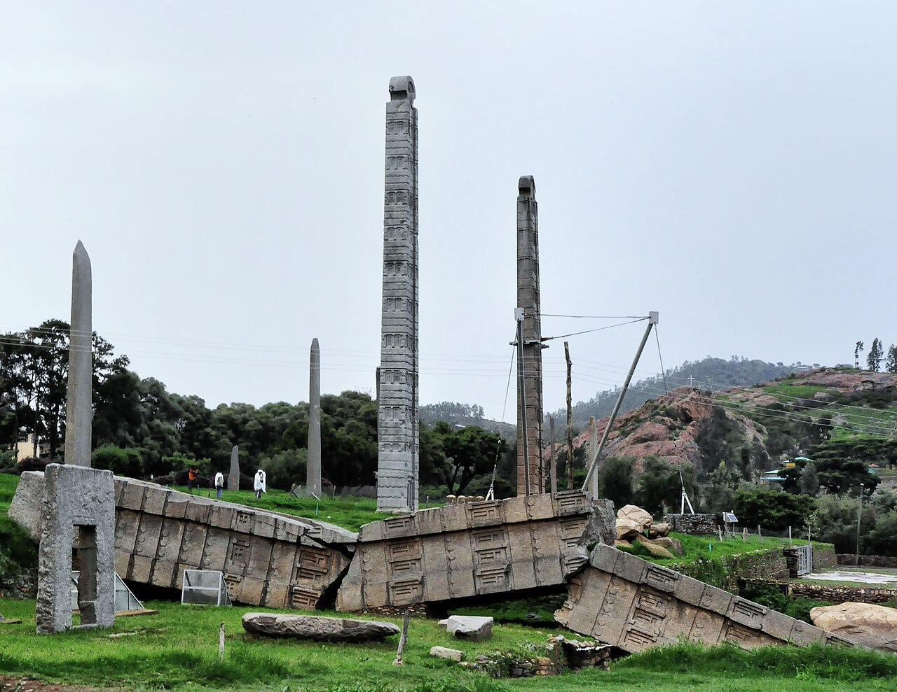

.jpg){kind=link}
Official Site Dossier & Maps · Aksum, Yeha and the Northern Horn Highlands ↗
Primary institutional boundary map, conservation reporting, and site gazetteer for Aksum, Yeha and the Northern Horn Highlands.
Deep dives / Africa & Middle East
Highland communities in northern Ethiopia and Eritrea domesticated teff and finger millet, erected stone temples by 800 BCE, and forged the Kingdom of Aksum—an international power minting its own coinage and linking the African interior with Rome, Persia, and India.
Archaeological sequences across Tigray, Eritrea, and Lasta highlands from c. 800 BCE to the Gondar era.

Northern Ethiopian and Eritrean highlands and Red Sea coast locality anchors.
c. 360 BCE–800 CE
Highland capital preserving Pre-Aksumite Ona roots on Bieta Giyorgis, royal monolithic granite stelae, palaces, and coins. [1] [2] [3] [11] [12] [14] [16]
14.13°, 38.72°c. 800–400 BCE
Pre-Aksumite monumental ashlar temple and elite complex with indigenous crops and Sabaic inscriptions. [4] [5]
14.28°, 39.02°c. 400 BCE–650 CE
Excavated administrative trade town housing one of sub-Saharan Africa’s earliest dated Christian basilicas. [6]
14.14°, 39.29°c. 100 BCE–650 CE
Principal Aksumite Red Sea port channeling African interior goods and Mediterranean/Indian Ocean trade. [7]
15.26°, 39.66°c. 1100–1400 CE
Eleven monumental monolithic and rock-cut churches carved from volcanic tuff in medieval Lasta. [8] [9] [13]
12.03°, 39.04°1636–1855 CE
Solomonic stone-palace capital grounded by fortified basalt-and-lime royal enclosures. [10]
12.61°, 37.47°Excavations atop Bieta Giyorgis hill overlooking Aksum reveal continuous settlement back into the late first millennium BCE (Pre-Aksumite and Proto-Aksumite Ona phases), showing that Aksum’s rise grew out of indigenous upland ploughed agriculture, cistern management, and highland trade networks. [1] [2]
As the Aksumite Empire expanded from the first to seventh centuries CE, rulers quarried syenite-granite monoliths carved to resemble multi-story towers over underground royal tombs, while secondary centers like Beta Samati and Red Sea port Adulis integrated Mediterranean glass, Roman amphorae, and South Asian trade. [3] [6] [7] [15]
| Site | Main Chronology | Core Evidence | Sources |
|---|---|---|---|
| Yeha | c. 800–400 BCE | Pre-Aksumite ashlar masonry, D’MT inscriptions, agricultural continuity | [4] [5] |
| Aksum (Bieta Giyorgis & Stelae) | c. 360 BCE–800 CE | Ona precursors, decorated monolithic stelae, Aksumite coins | [1] [3] |
| Beta Samati & Adulis | c. 100 BCE–650 CE | 4th-c. basilica, Ayla-Aksum amphorae, Indian & Roman maritime links | [6] [7] |
| Lalibela & Gondar | c. 1100–1855 CE | Post-Aksumite rock-hewn churches at Lasta; later stone palaces at Gondar | [8] [10] |
Paleoenvironmental studies indicate indigenous cultural strategies stabilized Ethiopian cereal agriculture across shifting rainfall regimes before and during Aksumite state growth. After Aksum’s political center moved south in the late first millennium CE, medieval Christian monarchs sculpted Lalibela’s sunken church complexes before Gondar rose as the fixed seventeenth-century stone capital. [5] [9] [8]
Published excavations and remote-sensing surveys across Aksum (Bieta Giyorgis & Stelae Field), Yeha, Beta Samati distinguish monumental construction events from long centuries of everyday craft, agricultural provisioning, and ritual reuse—relying on radiocarbon series, ceramic seriation, epigraphy, and geoarchaeological sediment cores rather than unverified royal annals alone. [1]
Exchange connections preserved across metallurgical ores, timber/stone sourcing, exotic prestige wares, and architectural styles demonstrate how each local horizon sat inside much broader continental corridors across africa. [2]
Ongoing conservation balancing living community custodianship, climate/erosion stressors, and non-invasive geophysical mapping continues to refine older 19th- and 20th-century excavation hypotheses. Map coordinates pinpoint documented archaeological properties and research zones rather than rigid ancient territorial borders. [11] [1]
Open the source maps for their original detail, legends and dates. Their coverage and reproduction terms belong to the issuing institution.
Primary institutional boundary map, conservation reporting, and site gazetteer for Aksum, Yeha and the Northern Horn Highlands.
Sources checked and linked above; geological and historical dating methods follow the primary papers.